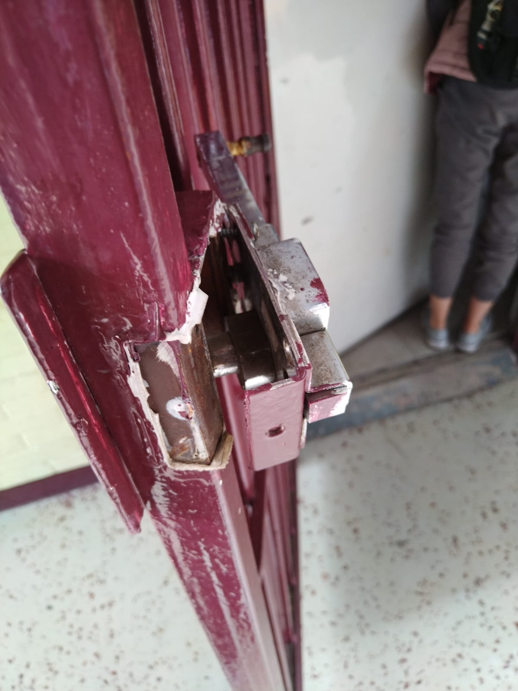
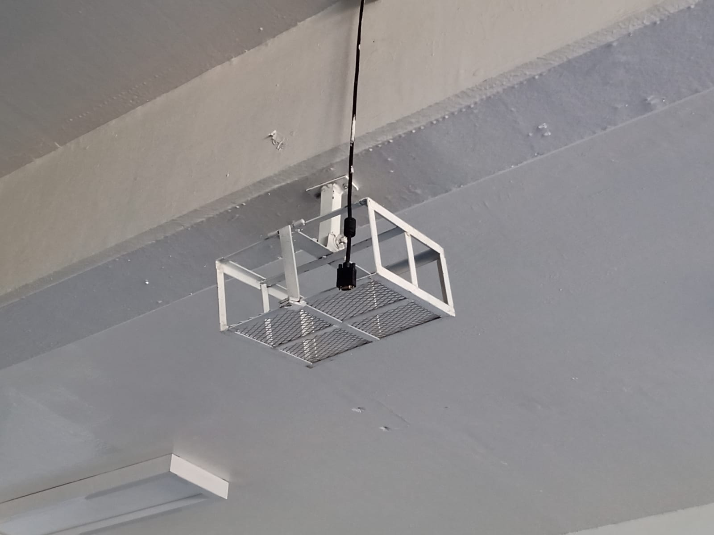
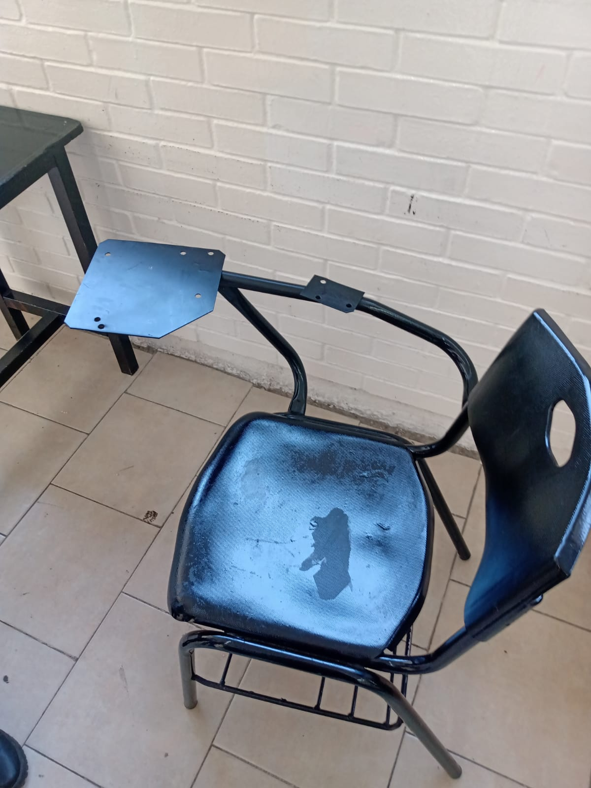

CetSolutions
Puertas: las puertas como vemos en la imagen sus chapas están rotas y esto es causado por muchas razones como
● Robos (que lo rompieron para entrar al salón o bodega a robar su contenido).
● Alumnos jugando con ella (azotar la puerta o romperla por gusto)
● Desgaste (mucho uso se oxida y debe ser cambiado)
● Mantenimiento
y estos deben de ser solucionados ya que con esas evitamos consecuencias graves como el acceso a ladrones, porros, etc.
Clas puertas como vemos en la imagen sus chapas están rotas y esto es causado por muchas razones como
● Robos (que lo rompieron para entrar al salón o bodega a robar su contenido).
● Alumnos jugando con ella (azotar la puerta o romperla por gusto)
● Desgaste (mucho uso se oxida y debe ser cambiado)
● Mantenimiento
y estos deben de ser solucionados ya que con esas evitamos consecuencias graves como el acceso a ladrones, porros, etc.

Los proyectores deben de estar disponibles para todos los salones ya que con este hacemos presentaciones o demostraciones para la educación de los estudiantes y maestros, pero al pasar el tiempo estos llegan a desaparecer por muchos tipos de razones como son
● Robos
● No llegan a funcionar
● No llegan a tener los suficientes proyectores para toda la institución
● No contiene con los materiales para su uso (cables de conexión)
● etc

En estos tiempos la electricidad ya es parte de nuestras vidas ya que con este obtenemos muchos beneficios para el apoyo de estudio y este da energía a las computadoras, proyectores, luz , acceso al internet, el proceso y manejo del agua entre otras cosas.
estos son algunas cosas que la verdad es beneficio pero en este caso su situación está un poco arriesgada ya muchos de estos fusibles llegan a tener fallas y puede ser peligroso y esto es por la causa de que las clavijas se rompen, igualmente desaparecen y esto causas sus fallas al sacar chispas o que llegaran a explotar y deben de estar en mantenimiento para cada una de ellas.

: Mesas, Sillas,Ventanas,Pizarrones, computadoras deben de estar en un buen estado ya que estos son usados diariamente tanto por maestros y alumnos esto es de que al estan en sus malas condiciones algunas partes con las que están hechas pueden ser filosas y puede causar de que alguien salga lastimado ya que su material es de fierros y metales y en las condiciones como sillas esto hace que sean removidos y así nadie pueda usarlas.Al estar en el mantenimiento junto con otros llegan a ser olvidades y siendo abandonados en las partes traceras de los planteles
